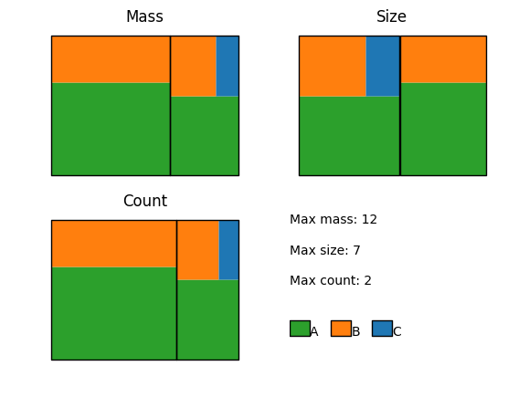

Module KaSaAn.scripts.kappa_snapshot_visualizer_patchwork
Visualize a kappa snapshot using a plain graph.
usage: kappa_snapshot_visualizer_patchwork [-h] -sf SNAPSHOT_FILE [-cs COLORING_SCHEME] [-vm {all,mass,count,size}] [-of OUTPUT_FILE] [-fs WIDTH HEIGHT] [-dpi DOTS_PER_INCH] [-ts TEXT_SIZE]
[-h] Show detailed help.
-sf SNAPSHOT_FILE_NAME Name of snapshot to visualize.
[-cs FILE_NAME] File specifying a coloring scheme.
[-vm [all|mass|count|size]] How to scale area; default plots all three.
[-of OUTPUT_FILE] The common file name for saving figures; shown if not given.
[-fs WIDTH HEIGHT] Size of the resulting figure, in inches.
[-dpi DOTS_PER_INCH] Resolution of the figure.
[-ts TEXT_SIZE] Override default size for text, in points.
[--text_instead_of_paths] Output text elements instead of paths; embeds used glyphs
For example:

Functions
def main(args=None)-
Expand source code
def main(args=None): """Visualize a kappa snapshot using a patchwork layout, where the area colored is proportional to the metric assayed. Metrics supported are mass (default), size, or count of each molecular species. Composition of each species is also displayed.""" if args is None: args = sys.argv[1:] parser = argparse.ArgumentParser(description=main.__doc__) parser.add_argument('-sf', '--snapshot_file', type=str, required=True, help='Name of the snapshot file to be viewed.') parser.add_argument('-cs', '--coloring_scheme', type=str, help='Optional file containing a dictionary with color scheme to use for species composition.' ' E.g. <{"Bob": #fff, "Mary": #999, "Sue": #222}>, where the color can be anything' ' converable to a color by MatPlotLib (e.g. RGB[A] tuples, hex-strings, XKCD colors...).' ' If not provided, one will be generated, but bear in mind it is unlikely to match one' ' generated by a different snapshot.') parser.add_argument('-vm', '--visualization_mode', choices=['all', 'mass', 'count', 'size'], type=str, default='all', help='Type of visualization: size displays biggest species largest;' ' count displays most abundant species largest; mass is the' ' product of size times abundance, indicative of "where is the' ' bulk of my system".') parser.add_argument('-of', '--output_file', type=Path, default=None, help='Optional name of file to save the view to instead of displaying it on screen. Extension' ' dictates the format. Valid choices include PNG, PDF, SVG (anything supported by' ' MatPlotLib).') parser.add_argument('-fs', '--fig_size', type=float, default=mpl.rcParams['figure.figsize'], nargs=2, help='Size of the resulting figure, in inches, specified as two elements, width and height' ' (text size is specified in points, so this affects the size of text relative to other' ' graph elements).') parser.add_argument('-dpi', '--dots_per_inch', type=float, default=mpl.rcParams['figure.dpi'], help='Resolution of the figure, specified as dots per inch.') parser.add_argument('-ts', '--text_size', type=int, help="If given, set point size for all text elements, overriding MatPlotLib's default.") parser.add_argument('--text_instead_of_paths', action='store_true', help='If set, figure will embed used glyphs and export text elements, instead of rendering the' ' glyphs into paths. Only supported for PDF export.') args = parser.parse_args() if args.text_size: mpl.rcParams['font.size'] = args.text_size if args.text_instead_of_paths: plt.rcParams['pdf.fonttype'] = 42 # for user-defined coloring schemes, read the dictionary from a file, convert keys to KappaAgent if args.coloring_scheme: coloring_scheme = {} with open(args.coloring_scheme, 'r') as cs_file: coloring_scheme_raw = ast.literal_eval(cs_file.read()) for key, value in coloring_scheme_raw.items(): coloring_scheme[KappaAgent(key)] = value else: coloring_scheme = None # make the figure fig = render_snapshot_as_patchwork(snapshot_file=args.snapshot_file, color_scheme=coloring_scheme, vis_mode=args.visualization_mode, fig_size=args.fig_size, fig_res=args.dots_per_inch) # Either save figure to file, or plot it if args.output_file: if not args.output_file.parent.exists(): args.output_file.parent.mkdir(parents=True) fig.savefig(args.output_file, bbox_inches='tight') else: plt.show()Visualize a kappa snapshot using a patchwork layout, where the area colored is proportional to the metric assayed. Metrics supported are mass (default), size, or count of each molecular species. Composition of each species is also displayed.